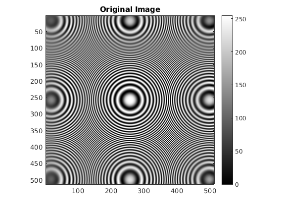
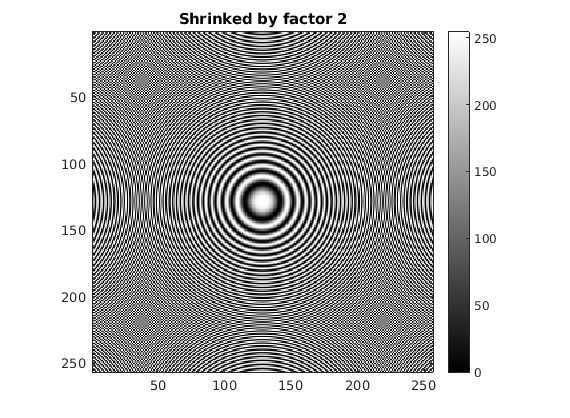
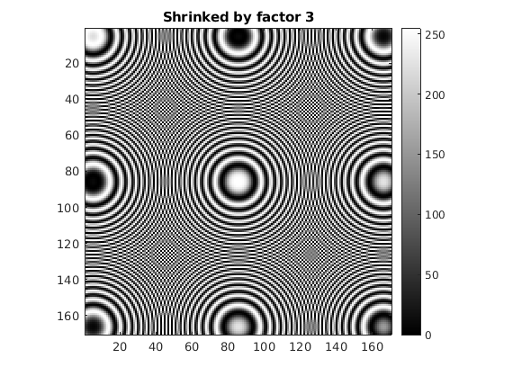
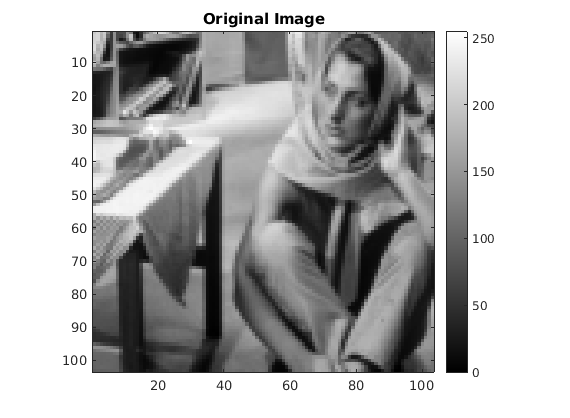
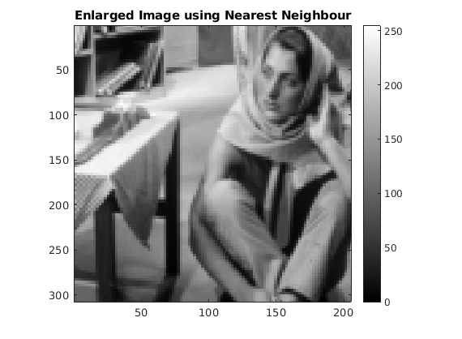
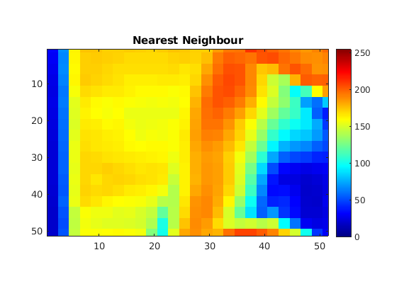
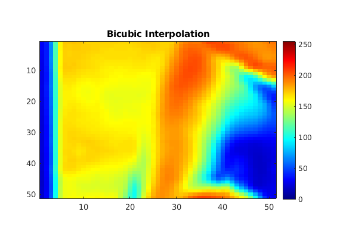
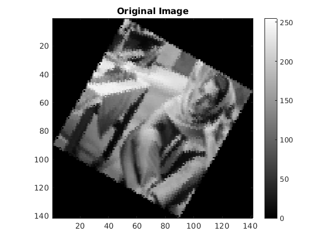

Contents
MyMainScript Q1
Report for Q1.
myNumOfColors = 255; myColorScale = [ [0:1/(myNumOfColors-1):1]',[0:1/(myNumOfColors-1):1]' , [0:1/(myNumOfColors-1):1]' ];
ib = imread('../data/barbaraSmall.png'); Ic = imread('../data/circles_concentric.png');
Image Shrinking
Shrinking By factor 2
X = myShrinkImageByFactorD(2); imagesc(Ic,[0,255]), title('Original Image'),colormap(myColorScale),daspect ([1 1 1]); axis tight; colorbar; % colorbar;
imagesc(X,[0,255]), title('Shrinked by factor 2'),colormap(myColorScale),daspect ([1 1 1]); axis tight; colorbar; % colorbar;
Shrinking By factor 3
X = myShrinkImageByFactorD(3); imagesc(X,[0,255]), title('Shrinked by factor 3'),colormap(myColorScale),daspect ([1 1 1]); axis tight; colorbar; % colorbar;
Image Enlargement using Bilinear Interpolation
i2 = myBilinearInterpolation(); imagesc(ib,[0,255]), title('Original Image'),colormap(myColorScale),daspect ([1 1 1]); axis tight; colorbar;
imagesc(i2,[0,255]), title('Enlarged Image using Bilinear Interpolation'),colormap(myColorScale),daspect ([2 3 1]); axis tight; colorbar;
Image Enlargement using Nearest Neighbour Interpolation
i1 = myNearestNeighborInterpolation(); imagesc(ib,[0,255]), title('Original Image'),colormap(myColorScale),daspect ([1 1 1]); axis tight; colorbar;
imagesc(i1,[0,255]), title('Enlarged Image using Nearest Neighbour'),colormap(myColorScale),daspect ([2 3 1]); axis tight; colorbar;
Image Enlargement using Bicubic Interpolation
i3 = myBicubicInterpolation(); imagesc(ib,[0,255]), title('Original Image'),colormap(myColorScale),daspect ([1 1 1]); axis tight; colorbar;
imagesc(i3,[0,255]), title('Bicubic'),colormap(myColorScale),daspect ([2 3 1]); axis tight; colorbar;
Comparison of different Interpolation using jet colormap
Colormap for a section of Nearest Neighbour Interpolation
imagesc(i1(125:175,75:125),[0,255]), title('Nearest Neighbour'),colormap('jet'),daspect ([2 3 1]); axis tight; colorbar;
Colormap for a section of Bilinear Interpolation
imagesc(i2(125:175,75:125),[0,255]), title('Bilinear Interpolation'),colormap('jet'),daspect ([2 3 1]); axis tight; colorbar;
Colormap for a section of Bicubic Interpolation
imagesc(i3(125:175,75:125),[0,255]), title('Bicubic Interpolation'),colormap('jet'),daspect ([2 3 1]); axis tight; colorbar;
We can see that Nearest Neighbour is the most blocky of the three whereas Bicubic is the least. T This is because Nearest Neighbour gives all the weight to one pixel "Nearest pixel", Bilinear fits a planar surface, and Bicubic allows for smoother curves hence it is better than the rest
i4 = myImageRotation(); imagesc(ib,[0,255]), title('Original Image'),colormap(myColorScale),daspect ([1 1 1]); axis tight; colorbar; % colorbar;
imagesc(i4,[0,255]), title('Original Image'),colormap(myColorScale),daspect ([1 1 1]); axis tight; colorbar; % colorbar;
myImageRotation uses simple coordinate geometry of rotation of axes and translation of origin to rotate the image. toc;